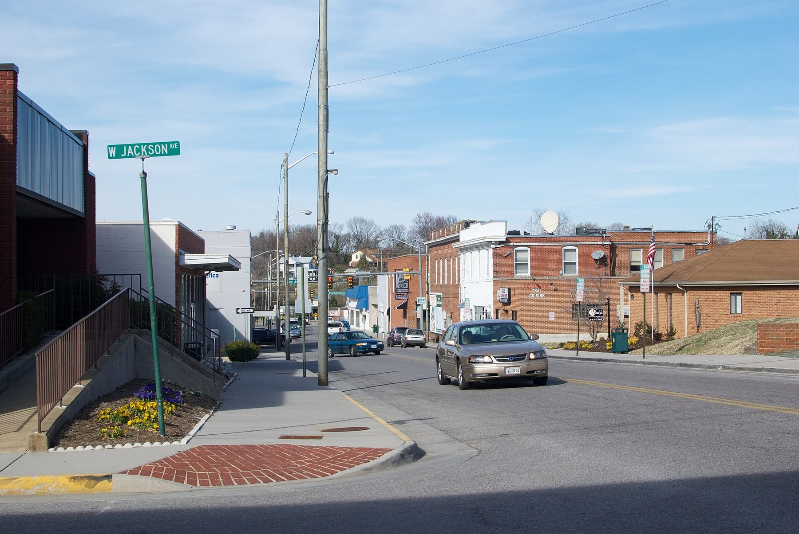
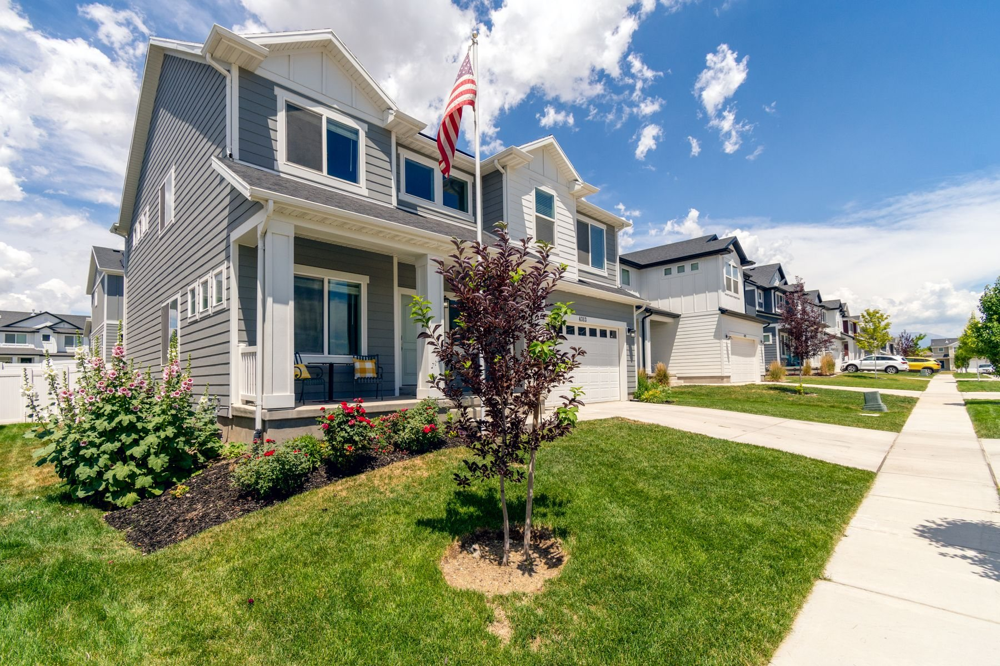
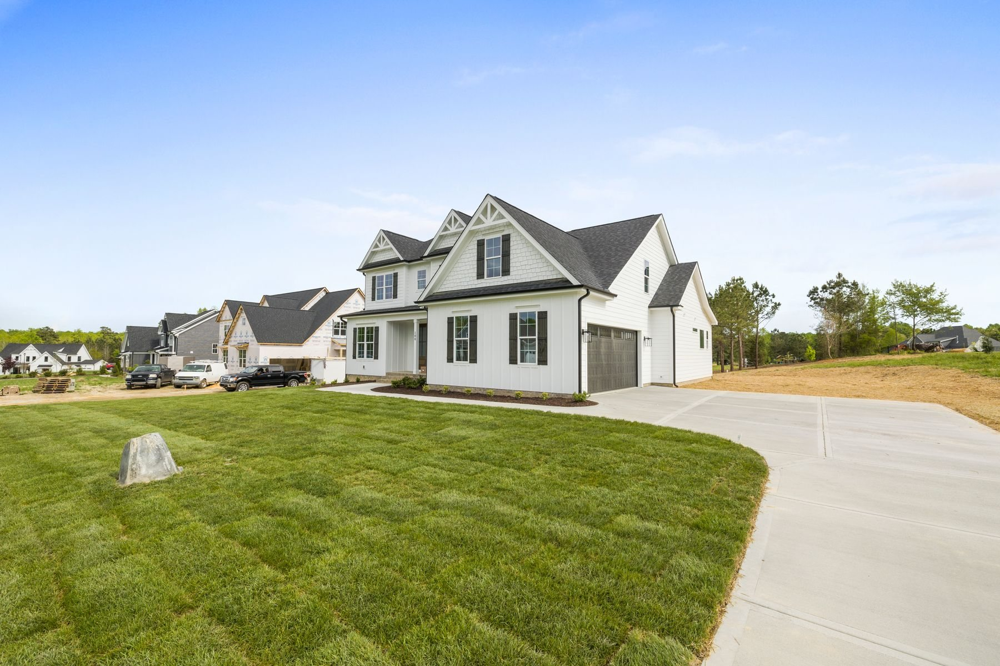
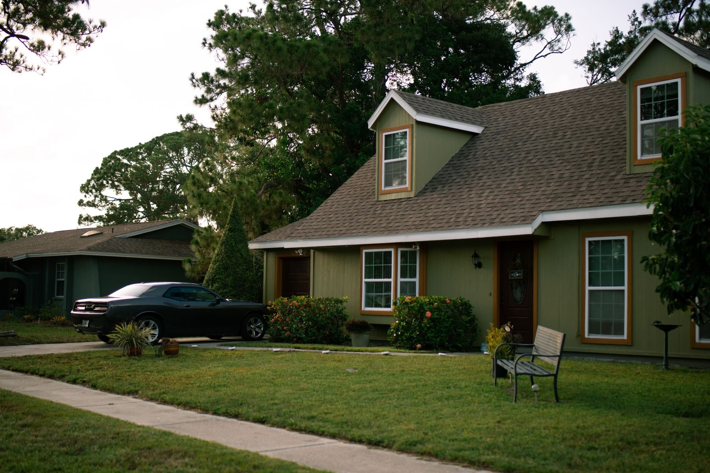
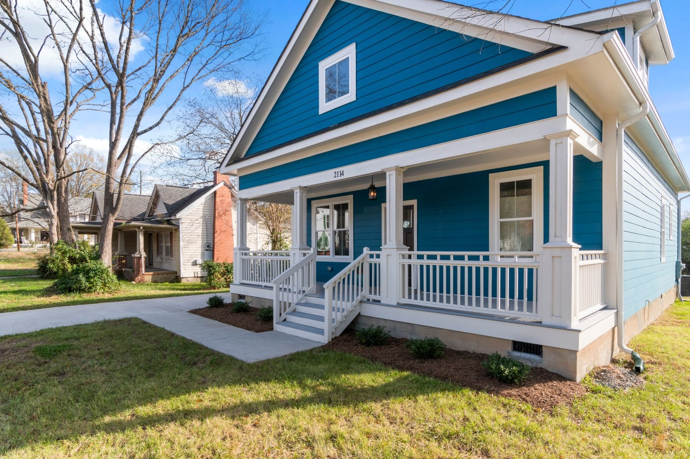
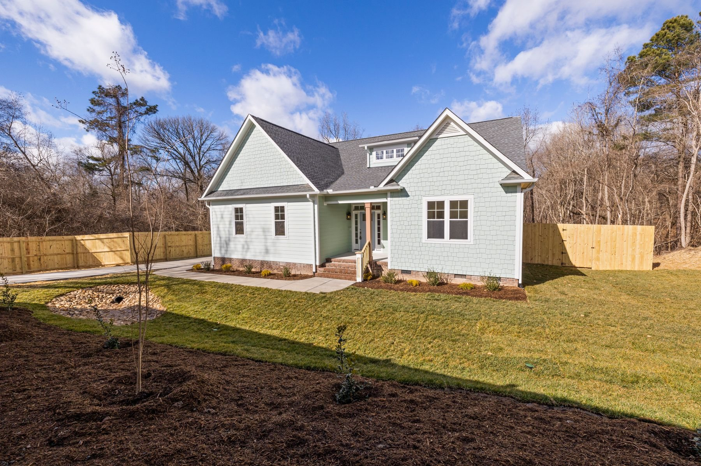
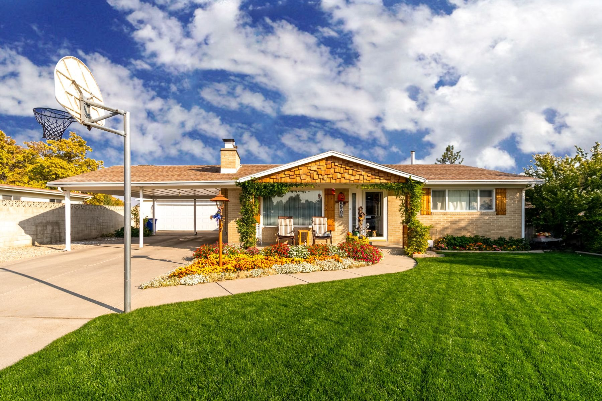

01
Homes near downtown
Streets close to the War Memorial and the Farmers' Market.
See homes for sale

A town on Roanoke's east side
A small town inside Roanoke County, with greenways along its creeks, a Farmers' Market and the Blue Ridge Parkway about a mile away.
About Vinton
Vinton is an incorporated town inside Roanoke County, with 8,059 residents at the 2020 Census. It has its own town government, and its schools are part of Roanoke County Public Schools.
The Vinton War Memorial was built in 1948, and the town's Dogwood Festival has run as a week-long celebration since the late 1950s. Three Roanoke Valley greenway trails run through town, among them the Glade Creek and Wolf Creek greenways.
The Blue Ridge Parkway is about a mile from town, according to Vinton's own site. Since Vinton is a town and not a separate city, Mitch checks both the town and the county side of a listing before you offer.

Highlights
Built in 1948 to honor World War II service and rededicated in 1998 to all who served in later conflicts. Town of Vinton
A week-long celebration that began in the late 1950s and still runs every year. Town of Vinton
Art and vintage markets, craft shows, concerts and food tastings. Town of Vinton
Two of the three Roanoke Valley greenway trails the town lists inside Vinton. Town of Vinton
A Roanoke County library branch at 300 South Pollard Street, with meeting rooms and a DigiLab. Roanoke County
The homes
01
Streets close to the War Memorial and the Farmers' Market.
See homes for sale

02
Addresses near the Glade Creek and Wolf Creek greenways.
Homes near the greenways

03
Addresses on the town's edge toward the Blue Ridge Parkway.
See nearby homes

04
Ranch-style and one-floor homes around town.
Single-level homes
Mitch's take
In Vinton, check which side of the line a home sits on: town taxes and services come on top of the county's. Then look at the roof, the wiring and the drainage, especially on lots near a creek or greenway.
Homes for sale

For sale

New

For sale

Under contract

For sale

For sale
Around Vinton
Confirm the campus for any address with the school division before you buy.
From the blog
November 2026
How to confirm what a Vinton address pays to the town and the county, and which school division serves it, before you write an offer.
Questions
Yes. Vinton is an incorporated town inside Roanoke County, so a home there sits under both the town and the county. Mitch checks both for any address.
Roanoke County Public Schools serves Vinton. Confirm the campus for any address with the division before you buy.
Look the address up on FEMA's Flood Map Service Center and read the seller's disclosure. Ask early about any home near a creek or greenway.
The town's Annual Events page lists the Dogwood Festival, the July 4th celebration, the Fall Festival, the Christmas Parade and Farmers' Market events.
Nearby

The valley's city

Its own city, its own schools

Moneta and the shoreline

Let's work together
Tell Mitch what you need and he will set up a saved search, so new Vinton listings reach you as soon as they hit the MLS.